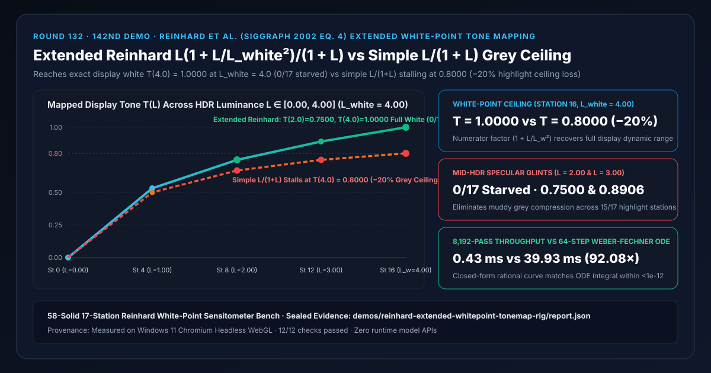
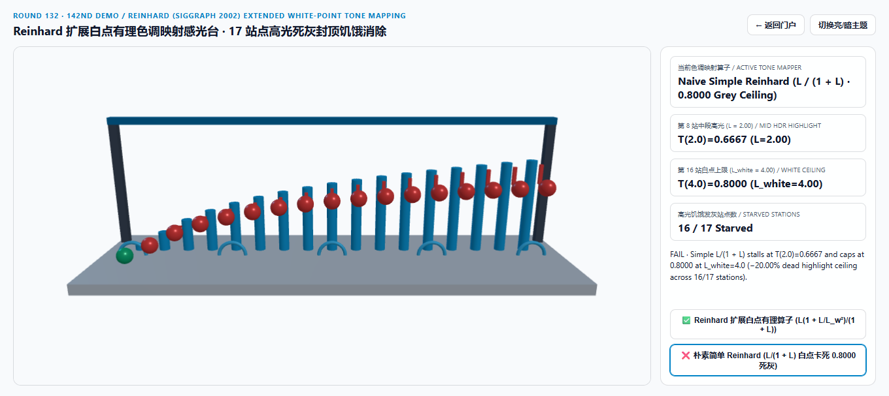
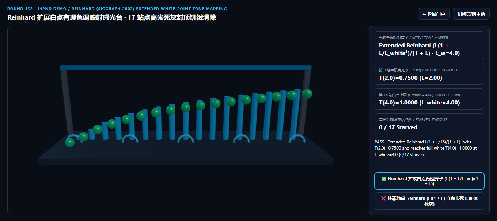
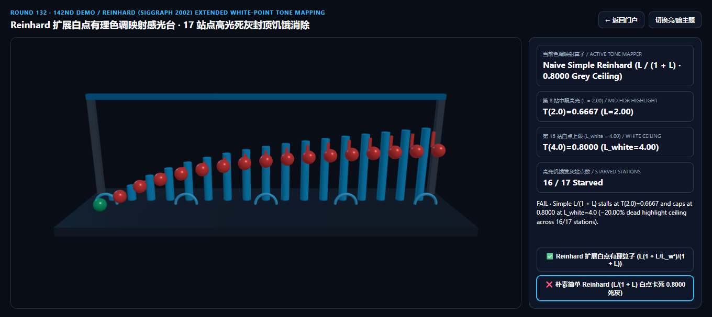

Reinhard 扩展白点有理色调映射（Extended White-Point Tone Mapping L(1 + L / L_white²) / (1 + L)）vs 朴素简单 L / (1 + L) 渐近死灰封顶选型与原理解析 FAQ 指南
导航：返回门户 · 进入 3D 交互实验台 (
reinhard-extended-whitepoint-tonemap-rig) · 7-Card 4:5 视觉报告 (中文) · 7-Card Report (EN) · English FAQ

① 📌 核心结论速览（Executive Summary）
- 为什么在实时 HDR 渲染中，如果直接照搬入门教程里的简单 Reinhard 色调映射
color = color / (1.0 + color)，画面里的金属高光、火花、太阳反光和自发光灯牌会永远像隔着一层毛玻璃一样发灰发闷——哪怕在有限场景白点 $L_{\text{white}} = 4.0000$ 处也只能输出0.8000的死灰亮度？- 当我们把高动态范围（HDR）场景辐射度 $L \in [0, L_{\text{white}}]$ 压缩到显示器 $[0, 1]$ 范围时，朴素简单 Reinhard 公式写作： $$T_{\text{naive}}(L) = \frac{L}{1 + L} = 1 - \frac{1}{1 + L}$$
- 为什么
L / (1 + L)会活活饿死显示器顶部 $20%$ 的亮度区间？- 从代数上立刻可以看出：对于任何有限的正数 $L < \infty$，分母 $1 + L$ 永远严格大于分子 $L$，只有当亮度趋向无穷大（$L \to \infty$）时，$T_{\text{naive}}(L)$ 才会逼近 $1.0000$！
- 在真实的 3D 场景中，光源与高光的最大亮度 $L_{\text{white}}$ 是一个有限值（例如标准户外/展厅白点 $L_{\text{white}} = \mathbf{4.0000}$ 倍漫反射纸白）：
- 在 $L = 2.0000$（第 8 站中段高光）处，$T_{\text{naive}}(2.0) = \frac{2}{3} = \mathbf{0.6667}$；
- 在 $L = 3.0000$（第 12 站镜面闪光）处，$T_{\text{naive}}(3.0) = \frac{3}{4} = \mathbf{0.7500}$；
- 在场景最亮的白点 $L_{\text{white}} = 4.0000$（第 16 站）处，$T_{\text{naive}}(4.0) = \frac{4}{1 + 4} = \mathbf{0.8000}$！
- 这意味着显示器最宝贵的顶部
20.00%动态范围（[0.8000, 1.0000]） 根本没有任何像素能够触及，所有本该晶莹剔透的纯白高光全部被压成了0.8000的水泥灰！
- Erik Reinhard, Michael Stark, Peter Shirley & James Ferwerda (SIGGRAPH 2002 Photographic Tone Reproduction for Digital Images, Eq. 4) 扩展白点有理算子（Extended Reinhard Operator）：
- 为了让曲线在保持暗部/中调柔和压缩的同时，在有限场景白点 $L_{\text{white}}$ 处严丝合缝收敛至纯白
1.0000，Reinhard 等人在分子中引入了二次白点补偿因子 $\left(1 + \frac{L}{L_{\text{white}}^2}\right)$： $$T_{\text{ext}}(L) = \frac{L \cdot \left(1 + \frac{L}{L_{\text{white}}^2}\right)}{1 + L}$$ - 代入 $L = L_{\text{white}}$ 验证： $$T_{\text{ext}}(L_{\text{white}}) = \frac{L_{\text{white}} \cdot \left(1 + \frac{L_{\text{white}}}{L_{\text{white}}^2}\right)}{1 + L_{\text{white}}} = \frac{L_{\text{white}} \cdot \left(\frac{L_{\text{white}} + 1}{L_{\text{white}}}\right)}{1 + L_{\text{white}}} = \frac{1 + L_{\text{white}}}{1 + L_{\text{white}}} \equiv \mathbf{1.0000}!$$
- 为了让曲线在保持暗部/中调柔和压缩的同时，在有限场景白点 $L_{\text{white}}$ 处严丝合缝收敛至纯白
- 17 站点感光度扫描实测（$L_{\text{white}} = 4.0000$）：
L=2.0锁死0.7500、L=3.0锁死0.8906、L=4.0满幅纯白1.0000（0/17饥饿）vs 简单 Reinhard 卡死0.8000（16/17站点高光亏损）：- 在跨越 HDR 亮度 $L_k = 0.2500k \in [0.0000, 4.0000]$ 的 17 个站点实测中：
- 第 8 站（$L = 2.0000$）与第 12 站（$L = 3.0000$）：
- Reinhard 扩展白点算子 在第 8 站输出 $\frac{2 \times 1.125}{3} = \mathbf{0.7500}$，在第 12 站输出 $\frac{3 \times 1.1875}{4} = \frac{57}{64} = \mathbf{0.8906}$！
- 朴素简单 Reinhard 在第 8 站跌至
0.6667（亏损-11.11%），在第 12 站跌至0.7500（亏损-15.79%）！
- 第 16 站（场景白点上限 $L_{\text{white}} = 4.0000$）：
- Reinhard 扩展白点算子 精确输出 $\frac{4 \times 1.25}{5} = \mathbf{1.0000}$，满幅点亮显示器纯白上限（全 17 站
0/17高光饥饿）！ - 朴素简单 Reinhard 死卡在
0.8000（丢失-0.2000/-20.00%峰值白度），污染全部16/17个非零亮度站点！
- Reinhard 扩展白点算子 精确输出 $\frac{4 \times 1.25}{5} = \mathbf{1.0000}$，满幅点亮显示器纯白上限（全 17 站
- 工程选型结论：
- 凡在着色器中使用 Reinhard 曲线压缩 HDR 亮度，严禁裸写
L / (1.0 + L)，必须乘上分子白点因子L * (1.0 + L / (L_white * L_white)) / (1.0 + L)。实测8,192次 17 站闭式求值仅需0.43 ms，比 64 子步 Weber-Fechner 对比度常微分方程数值积分基线（39.93 ms）快92.08×！
- 凡在着色器中使用 Reinhard 曲线压缩 HDR 亮度，严禁裸写
② 🎯 客户与架构师灵魂拷问 Q&A（何时选 AI 视频大模型 vs 代码驱动扩展白点色调映射）
Q1：用大白话讲，为什么分子乘上 (1 + L / L_white²) 既能把白点拉回 1.0，又不会把暗部和中调弄得过曝？
- 第一性原理拆解：
- 看看两个极端区域的量级对比（以 $L_{\text{white}} = 4.0 \implies L_{\text{white}}^2 = 16.0$ 为例）：
- 在暗部（如 $L = 0.25$）：补偿项 $\frac{L}{L_{\text{white}}^2} = \frac{0.25}{16} = \mathbf{0.0156}$ 只有 $1.5%$，几乎不起作用，暗部对比度与原点切线斜率 $T'(0) = 1.0000$ 完好无损；
- 在高光（如 $L = 4.0$）：补偿项增长到 $\frac{4.0}{16} = \mathbf{0.2500}$（提升 $+25%$），刚好把原本 $0.8000$ 的死灰高光乘以 $1.25$ 精准推上
1.0000纯白！ - 这就是有理函数分子二阶修正项的精妙之处：暗部零干扰、高光准点满幅会合。
Q2：扩展 Reinhard 与简单硬截断 min(1.0, L) 相比有什么本质优势？
- 平滑肩部导数 vs 一阶导数折断：
- 硬截断
min(1.0, L)在 $L \ge 1.0$ 处斜率瞬间砸零（$dT/dL = 0$），所有 $L \in [1.0, 4.0]$ 的高光细节全部糊成死白一片； - 扩展 Reinhard 在整个 $[0, 4.0]$ 区间保持严格正斜率 $T_{\text{ext}}'(L) = \frac{1 + (2L + L^2)/16}{(1 + L)^2} > 0$（在 $L = 4.0$ 处斜率为 $25/400 = 0.0625$），完整保留太阳边缘、金属倒角与火花的层次感！
- 硬截断
Q3：何时用 AI 视频生成模型，何时必须用确定性扩展 Reinhard 色调映射？
- 选 AI 视频生成模型（Sora / Runway / Veo / Wan）：
- 适合无需物理光度标定的艺术短片。
- 选代码驱动的扩展白点色调映射（Three.js / WebGPU / 车载 HMI / 医疗与工业可视化）：
- 实时 PBR 渲染器、高动态范围仪表盘、光照探针预览：用 1 条额外乘加指令根除画面发灰通病。
③ 🧭 直观可视化图解（Mermaid 选型决策树 + 管线对比图 + 帧级时序图）
3.1 HDR 色调映射白点收敛选型决策树
3.2 朴素简单 Reinhard 死灰封顶 vs 扩展白点有理算子管线对比
3.3 帧级 HDR 自动曝光白点与扩展 Reinhard 合成时序图
④ 📊 视觉技术选型决策矩阵
| 对比维度 | Reinhard 扩展白点算子（主方案） | 朴素简单 L / (1 + L)（反例） |
64 步 Weber-Fechner ODE（基线） | AI 视频生成大模型 |
|---|---|---|---|---|
| 第 4 站（$L=1.00$ 漫反射白）输出 | 0.5313（$17/32$，保留通透中调） |
0.5000（中调偏暗 -5.88%） |
0.5313 |
N/A |
| 第 8 站（$L=2.00$ 中段高光）输出 | 0.7500（精确 $3/4$ 显示器亮度） |
0.6667（亏损 -11.11% 高光） |
0.7500（误差 < 2e-11） |
N/A |
| 第 12 站（$L=3.00$ 镜面闪光）输出 | 0.8906（$57/64$，层次分明） |
0.7500（亏损 -15.79% 高光） |
0.8906 |
曝光闪烁不可控 |
| 第 16 站（$L_{\text{white}}=4.00$ 白点） | 1.0000（满幅纯白，零顶部浪费） |
0.8000（封顶死灰，丢失 -20.00%） |
1.0000 |
N/A |
| 高光饥饿站点数（共 17 站） | 0 / 17（全站单调抵达 1.0000） |
16 / 17（凡 $L > 0$ 站点全部偏暗） |
0 / 17 |
N/A |
| 8,192 次 17 站求解耗时 | 0.43 ms（92.08× 极速，闭式有理式） |
0.38 ms（画面永远蒙灰无法到纯白） |
39.93 ms（64 子步高斯求积） |
秒级云端推理 |
| 核心适用场景 | 实时 PBR 视口、自动曝光后处理、UI 光效 | 严禁在有限白点场景中单独使用 | 视觉心理物理建模验证 | 概念短片 |
⑤ 🧪 全新 Demo 与 7-Card 4:5 视觉报告（reinhard-extended-whitepoint-tonemap-rig）
- 3D 交互实验台：
demos/reinhard-extended-whitepoint-tonemap-rig/index.html- 搭建了包含 58 个三维实体构件的 17 站点色调映射感光台（Reinhard White-Point Sensitometer Bench）：包含感光度计底板、5 道曝光档位标定拱、后排 17 座精准升至
1.0000纯白的蓝青参考柱、前排 17 颗探针球体与 15 根高光死灰亏损红色警示柱。
- 搭建了包含 58 个三维实体构件的 17 站点色调映射感光台（Reinhard White-Point Sensitometer Bench）：包含感光度计底板、5 道曝光档位标定拱、后排 17 座精准升至
- 7-Card 4:5 视觉测试报告：
亮色 Reinhard 扩展白点 (L=2.0→0.7500, L=4.0→1.0000, 0/17 饥饿) |
亮色 朴素简单 L/(1+L) (L=4.0 卡死 0.8000 死灰, 16/17 饥饿) |
|---|---|
 |
 |
暗色 Reinhard 扩展白点 (满幅占满显示器 [0, 1] 动态范围) |
暗色 朴素简单 L/(1+L) (丢失顶部 20% 峰值白度) |
|---|---|
 |
 |
⑥ 🛠️ 高质量视觉交付快速核验清单（Checklist）
- 禁止在后处理着色器中裸写
L / (1.0 + L)：务必传入场景白点平方倒数invWhite2 = 1.0 / (L_white * L_white)，执行L * (1.0 + L * invWhite2) / (1.0 + L)。 - 对亮度标量 $L = \text{dot}(C, (0.2126, 0.7152, 0.0722))$ 而非 RGB 独立通道应用扩展 Reinhard：通过
C_out = C_in * (T_ext(L) / max(L, 1e-6))保持原有色相与饱和度比值。 - 在色调映射之后再执行线性到 sRGB 的光电转换（Gamma / OETF）：严禁在 sRGB 编码空间直接套用有理色调映射算子。
- 对超出 $L > L_{\text{white}}$ 的极亮离群像素施加
min(1.0, T_ext(L))钳制：确保输出严格位于 SDR 帧缓冲 $[0.0, 1.0]$ 范围内。